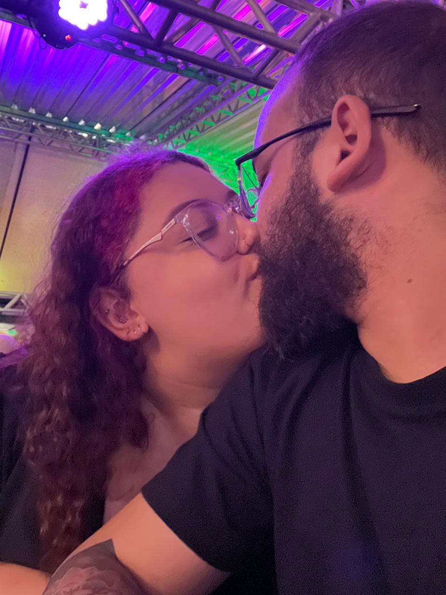
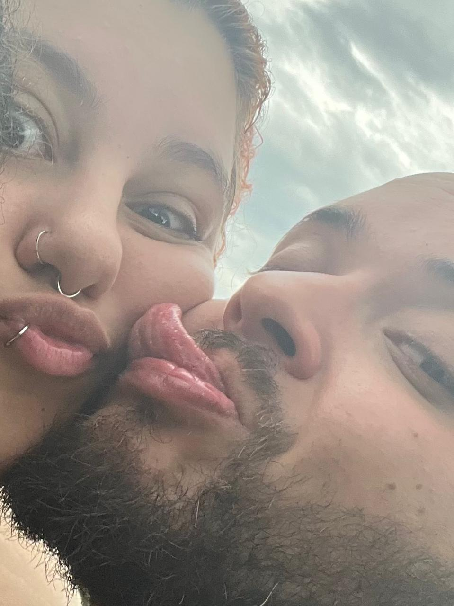
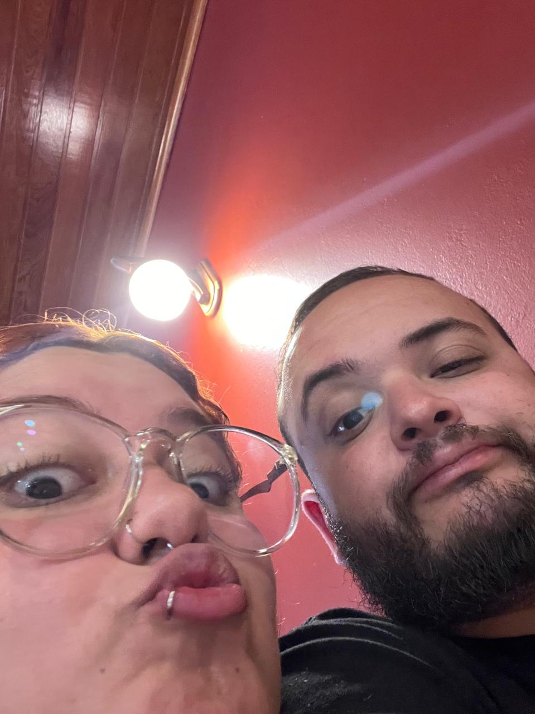
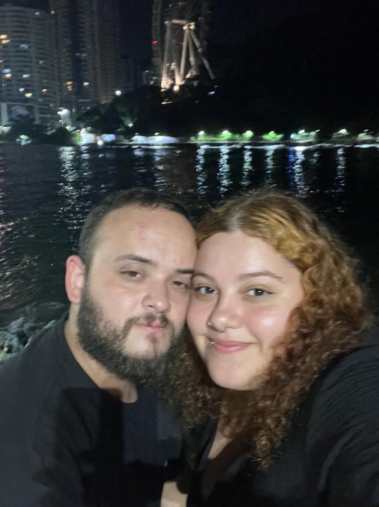
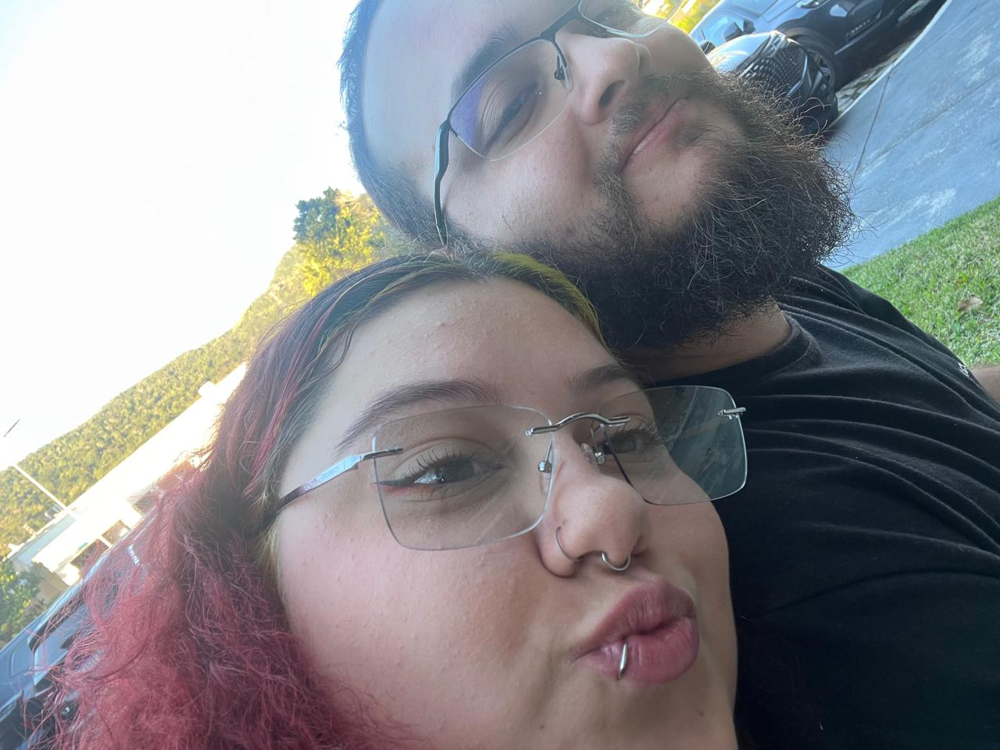
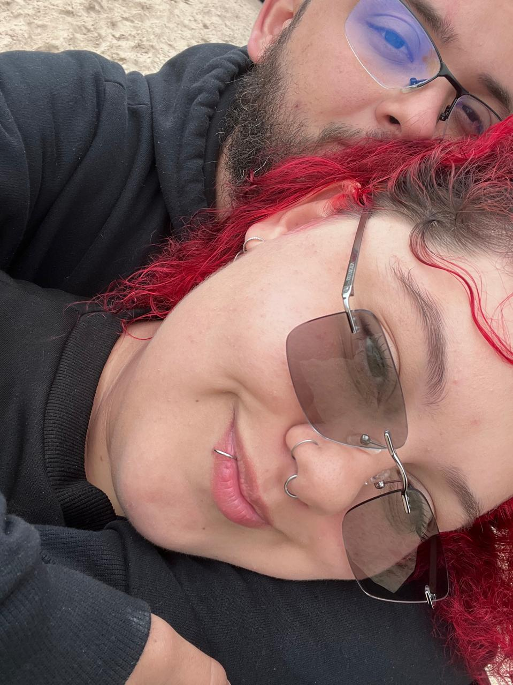
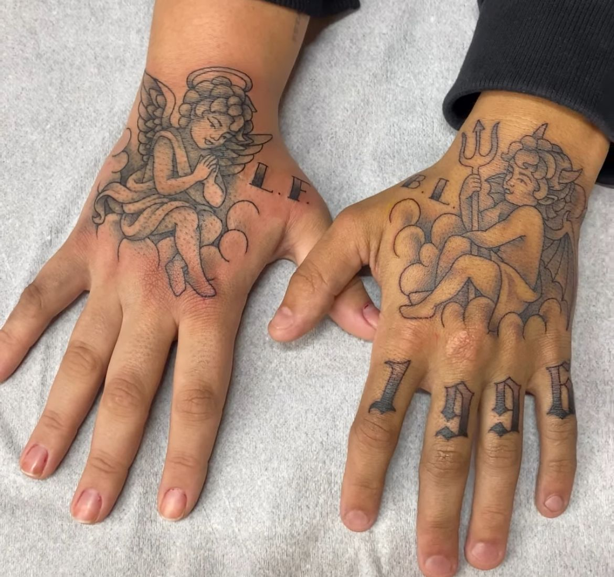

14/06/2025
PRIMEIRA CONVERSA
PRIMEIRA CONVERSA

PRIMEIRA FOTO JUNTINHOS

PRIMEIRA VEZ NA PRAIA

PRIMEIRA OKTOBERFEST

LAYBACK - LAGOA DA CONCEIÇÃO

NOSSA PRIMEIRA VEZ NO BETO CARRERO WORLD

BENEDITO NOVO

MY B-DAY

NOSSO PRIMEIRO ANO NOVO JUNTOS

ROLÊS DA MADRUGADA

POR DO SOL

UMA DAS NOSSAS MIL FOTOS FAZENDO CARETA

A GENTE NO CARNAVAL DE FLORIPA

UM DIA ALEATÓRIO NA PRAIA

AULA DE ROBÓTICA

PESCANDO NA BARRA DA LAGOA

AMORZÃO

PRAIA DE MOÇAMBIQUE

NOSSA TATTOO